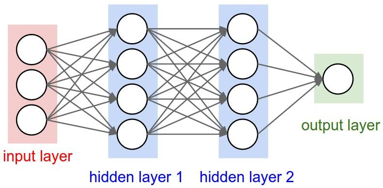

For any Keras layer (Layer class), can someone explain how to understand the
difference between input_shape, units, dim, etc.?
For example the doc says units specify the output shape of a layer.
In the image of the neural net below hidden layer1 has 4 units. Does this
directly translate to the units attribute of the Layer object? Or does
units in Keras equal the shape of every weight in the hidden layer times the
number of units?
In short how does one understand/visualize the attributes of the model - in
particular the layers - with the image below? 
Answer
Units:
The amount of "neurons", or "cells", or whatever the layer has inside it.
It's a property of each layer, and yes, it's related to the output shape (as
we will see later). In your picture, except for the input layer, which is
conceptually different from other layers, you have:
- Hidden layer 1: 4 units (4 neurons)
- Hidden layer 2: 4 units
- Last layer: 1 unit
Shapes
Shapes are consequences of the model's configuration. Shapes are tuples
representing how many elements an array or tensor has in each dimension.
Ex: a shape (30,4,10) means an array or tensor with 3 dimensions,
containing 30 elements in the first dimension, 4 in the second and 10 in the
third, totaling 30410 = 1200 elements or numbers.
The input shape
What flows between layers are tensors. Tensors can be seen as matrices, with
shapes.
In Keras, the input layer itself is not a layer, but a tensor. It's the
starting tensor you send to the first hidden layer. This tensor must have the
same shape as your training data.
Example: if you have 30 images of 50x50 pixels in RGB (3 channels), the
shape of your input data is (30,50,50,3). Then your input layer tensor, must
have this shape (see details in the "shapes in keras" section).
Each type of layer requires the input with a certain number of dimensions:
-
Dense layers require inputs as (batch_size, input_size)
- or
(batch_size, optional,...,optional, input_size)
- 2D convolutional layers need inputs as:
- if using
channels_last: (batch_size, imageside1, imageside2, channels)
- if using
channels_first: (batch_size, channels, imageside1, imageside2)
- 1D convolutions and recurrent layers use
(batch_size, sequence_length, features)
- Details on how to prepare data for recurrent layers
Now, the input shape is the only one you must define, because your model
cannot know it. Only you know that, based on your training data.
All the other shapes are calculated automatically based on the units and
particularities of each layer.
Relation between shapes and units - The output shape
Given the input shape, all other shapes are results of layers calculations.
The "units" of each layer will define the output shape (the shape of the
tensor that is produced by the layer and that will be the input of the next
layer).
Each type of layer works in a particular way. Dense layers have output shape
based on "units", convolutional layers have output shape based on "filters".
But it's always based on some layer property. (See the documentation for what
each layer outputs)
Let's show what happens with "Dense" layers, which is the type shown in your
graph.
A dense layer has an output shape of (batch_size,units). So, yes, units, the
property of the layer, also defines the output shape.
- Hidden layer 1: 4 units, output shape:
(batch_size,4).
- Hidden layer 2: 4 units, output shape:
(batch_size,4).
- Last layer: 1 unit, output shape:
(batch_size,1).
Weights
Weights will be entirely automatically calculated based on the input and the
output shapes. Again, each type of layer works in a certain way. But the
weights will be a matrix capable of transforming the input shape into the
output shape by some mathematical operation.
In a dense layer, weights multiply all inputs. It's a matrix with one column
per input and one row per unit, but this is often not important for basic
works.
In the image, if each arrow had a multiplication number on it, all numbers
together would form the weight matrix.
Shapes in Keras
Earlier, I gave an example of 30 images, 50x50 pixels and 3 channels, having
an input shape of (30,50,50,3).
Since the input shape is the only one you need to define, Keras will demand it
in the first layer.
But in this definition, Keras ignores the first dimension, which is the batch
size. Your model should be able to deal with any batch size, so you define
only the other dimensions:
input_shape = (50,50,3)
#regardless of how many images I have, each image has this shape
Optionally, or when it's required by certain kinds of models, you can pass the
shape containing the batch size via batch_input_shape=(30,50,50,3) or
batch_shape=(30,50,50,3). This limits your training possibilities to this
unique batch size, so it should be used only when really required.
Either way you choose, tensors in the model will have the batch dimension.
So, even if you used input_shape=(50,50,3), when keras sends you messages,
or when you print the model summary, it will show (None,50,50,3).
The first dimension is the batch size, it's None because it can vary
depending on how many examples you give for training. (If you defined the
batch size explicitly, then the number you defined will appear instead of
None)
Also, in advanced works, when you actually operate directly on the tensors
(inside Lambda layers or in the loss function, for instance), the batch size
dimension will be there.
- So, when defining the input shape, you ignore the batch size:
input_shape=(50,50,3)
- When doing operations directly on tensors, the shape will be again
(30,50,50,3)
- When keras sends you a message, the shape will be
(None,50,50,3) or (30,50,50,3), depending on what type of message it sends you.
Dim
And in the end, what is dim?
If your input shape has only one dimension, you don't need to give it as a
tuple, you give input_dim as a scalar number.
So, in your model, where your input layer has 3 elements, you can use any of
these two:
-
input_shape=(3,) -- The comma is necessary when you have only one dimension
input_dim = 3
But when dealing directly with the tensors, often dim will refer to how many
dimensions a tensor has. For instance a tensor with shape (25,10909) has 2
dimensions.
Defining your image in Keras
Keras has two ways of doing it, Sequential models, or the functional API
Model. I don't like using the sequential model, later you will have to
forget it anyway because you will want models with branches.
PS: here I ignored other aspects, such as activation functions.
With the Sequential model :
from keras.models import Sequential
from keras.layers import *
model = Sequential()
#start from the first hidden layer, since the input is not actually a layer
#but inform the shape of the input, with 3 elements.
model.add(Dense(units=4,input_shape=(3,))) #hidden layer 1 with input
#further layers:
model.add(Dense(units=4)) #hidden layer 2
model.add(Dense(units=1)) #output layer
With the functional API Model :
from keras.models import Model
from keras.layers import *
#Start defining the input tensor:
inpTensor = Input((3,))
#create the layers and pass them the input tensor to get the output tensor:
hidden1Out = Dense(units=4)(inpTensor)
hidden2Out = Dense(units=4)(hidden1Out)
finalOut = Dense(units=1)(hidden2Out)
#define the model's start and end points
model = Model(inpTensor,finalOut)
Shapes of the tensors
Remember you ignore batch sizes when defining layers:
- inpTensor:
(None,3)
- hidden1Out:
(None,4)
- hidden2Out:
(None,4)
- finalOut:
(None,1)
Suggest
Input Dimension Clarified:
Not a direct answer, but I just realized that the term "Input Dimension" could
be confusing, so be wary:
The word "dimension" alone can refer to:
a) The dimension of Input Data (or stream) such as # N of sensor axes to
beam the time series signal, or RGB color channels (3): suggested term =
"Input Stream Dimension"
b) The total number / length of Input Features (or Input layer) (28 x 28 =
784 for the MINST color image) or 3000 in the FFT transformed Spectrum Values,
or
"Input Layer / Input Feature Dimension"
c) The dimensionality (# of dimensions) of the input (typically 3D as
expected in Keras LSTM) or (# of Rows of Samples, # of Sensors, # of Values..)
3 is the answer.
"N Dimensionality of Input"
d) The SPECIFIC Input Shape (eg. (30,50,50,3) in this unwrapped input
image data, or (30, 2500, 3) if unwrapped Keras:
In Keras, input_dim refers to the Dimension of Input Layer / Number of Input
Features
model = Sequential()
model.add(Dense(32, input_dim=784)) #or 3 in the current posted example above
model.add(Activation('relu'))
In Keras LSTM, it refers to the total Time Steps
The term has been very confusing, we live in a very confusing world!!
I find one of the challenge in Machine Learning is to deal with different
languages or dialects and terminologies (like if you have 5-8 highly different
versions of English, then you need a very high proficiency to converse with
different speakers). Probably this is the same in programming languages too.